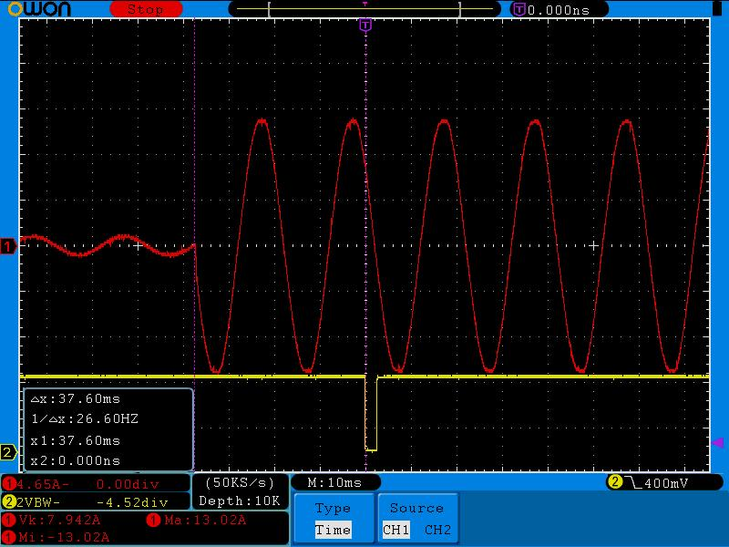

Hi,
I recently posted a question on a local (NZ) forum asking some questions about my proposed PV diversion design, as I have a slightly unusual setup in terms of my hot water cylinder wiring.
As part of that discussion a user posted this comment;
I am assuming that the designer of the system you have linked to is on a "nett metered" billing plan for his grid connected solar. Which means he can "get away" with a system that simply switches the element on in bursts. In NZ you have to have a meter that separately records imported and exported power. Which means that a system that can only control the element in bursts could actually cause higher power bills.
So from what I understand, in NZ we have a special import/export meter installed when we get solar PV installed. This records both import and export on separate meters. We then get a bill with a charge for the total import, and a separate line item with a credit for any export. I believe this is different to how your grid connected systems are metered in the UK?
Is what he is saying correct, in that by using a PV diverter (based on Robin's design) using bursts of power to the cylinder element, the import meter will pick up anything in excess of what is being generated by the PV panels, and charge me?
Or will the diverter cycle the load quick enough to ensure the load/import never gets registered? Can the SSR cycle it quick enough to do this, seeing as it can only 'switch' on zero crossings?
I am new to all this stuff and am trying my hardest to get my head around it all!
Here is the forum thread if you are interested; http://www.geekzone.co.nz/forums.asp?forumid=73&topicid=153861
Best regards,
Ben
Re: PV diversion - will it still work with separate import/export meter registers?
I think the meters the Brits use generally only count energy in the forward direction. Once the energy reverses or drops below the anti-creep threshold they stop counting. The meters you guys use in NZ sound like the ones we use here in Aus. When the power is below the anti-creep threshold nothing gets counted, otherwise it's always getting counted in one of two registers (import or export) depending on the power direction.
I think your poster is claiming that because the meter needs to keep track of both directions accurately, it's going to be much more sensitive to direction changes, i.e. have a much smaller "sweet spot". That's certainly possible, but I don't know that it's inevitable.
There's a long discussion here: http://openenergymonitor.org/emon/node/5237 on meter sweet spots. In that thread, I posted the attached scope trace that shows just how quickly typical metering ICs can detect power reversal when configured to do so. There are more details on my test conditions in the original post, but the red trace is the current, and the yellow trace is the /IRQ signal to alert me the power has changed directions. Whether or not the firmware in your meter does this is another question. I suspect the only way to determine that is to test it.

Re: PV diversion - will it still work with separate import/export meter registers?
Very interesting, thanks dBC. This sort of thing is definitely a little out of my league in terms of having a good understanding, but I will read that thread and try to grasp some more! It is good to know that this system is working for you on a similar type of meter as ours here in NZ. I had always assumed it would, as I know of a few guys here in NZ that have Robins Mk2PVRouter running and according to them it is working well.
I think it might just be a case of hooking it all up and then checking the import/export readings after a month. Currently I have an EmonTX v2 Arduino shield monitoring my feed and it is reporting within 1% of what my electricity provider is billing me - according to their online portal which shows daily totals for both the import/export registers.
So I am pretty confident the EmonTX is accurate - meaning once I hook the PV diversion up I should know pretty quickly if I am being charged for exceeding my 'sweet spot'.
Thanks again for the detailed post.
Ben
Re: PV diversion - will it still work with separate import/export meter registers?
It is good to know that this system is working for you
Actually, I don't have a diverter. I get paid 50c for each kWH I export, with no upper limit. That's way more than I pay for my imports, so if anything I need the opposite of a diverter. The stuff coming off my roof is liquid gold so long as I send it out to the grid rather than use it myself.
Re: PV diversion - will it still work with separate import/export meter registers?
Jeepers - that is pretty generous - whereabouts in Oz are you?
Re: PV diversion - will it still work with separate import/export meter registers?
@dBC - this is the response I received on the Geekzone thread earlier today (apologies for the cross posting but I am a little lost with all this stuff and am trying to get a complete picture using the expertise from both forums!).
Has anyone on the OEM forum tried this sort of approach? Using a variable controller to adjust the amount of power diverted to the HWC? Rather than pulsing/bursting?
In theory it sounds quite promising, but I am completely lost when things like power factors and reactive power are talked about...
Is there any reason this type of diversion hasn't been attempted before (or perhaps it already has and was no good?)? Or is there another reason this won't work?
Appreciate you sharing your expertise in this!
Re: PV diversion - will it still work with separate import/export meter registers?
whereabouts in Oz are you?
SEQ, grandfathered in on a scheme that's no longer available.
I'll leave your diverter switching control question to those who know far more about the options than I do. I just measure it, I don't switch it.
Re: PV diversion - will it still work with separate import/export meter registers?
What you're describing with the "really high current leading edge light dimmer" is phase angle control. It's explained in Robin's article about his diverter. But to avoid problems with interference generated by the fast rising edges (which can go from audio frequencies right up into the radio bands), you need big and expensive filters. That's the main reason why everyone here has opted for burst fire - which has its own problems with flicker if you are on a weak supply. Robin has published a sketch for phase angle control, so it does work.
I'm reasonably certain that phase angle control would work with those pesky meters that don't have a dead band within which you can freely import and export without incuring a charge.
Re: PV diversion - will it still work with separate import/export meter registers?
I'm reasonably certain that phase angle control would work with those pesky meters that don't have a dead band within which you can freely import and export without incurring a charge.
I couldn't get it to work with my 5219 meter.
Re: PV diversion - will it still work with separate import/export meter registers?
"I couldn't get it to work with my 5219 meter." So you're saying that the meter detects and differentiates export and import within one half-cycle then? Do you have any idea about how it responds with a purely reactive load?
Re: PV diversion - will it still work with separate import/export meter registers?
I just tested my energy monitor with ideal inputs of 230V and 2A offset by 90 degrees.
It reads -459.6 VAR and -0.3W so it has ever so slightly flipped into the wrong quadrant (the sign of the reactive is correct, but the real should be 0). But I had to disable the anti-creep feature to see that. With anti-creep enabled it reads -459.6 VAR and 0W.
Re: PV diversion - will it still work with separate import/export meter registers?
That sounds good to me. I won't argue with 0.3 W in 460 var. I've used a capacitor to calibrate Phasecal, and it seems a more positive method to adjust to a reasonably well-defined zero rather than trying to find a flat-topped maximum. But I don't expect everyone to have suitable capacitors to hand. I'm hoping Nick has so that he can enlighten us about his meter.
Re: PV diversion - will it still work with separate import/export meter registers?
I'm lucky enough to have access to a calibrated calibrator, that lets me dial up pretty much anything I want, although this particular model won't let me inject harmonics.
Re: PV diversion - will it still work with separate import/export meter registers?
I'm afraid I don't have much equipment at all.
I tried Robins Phase burst sketch with the meter and it always measured some import. It was some months ago and I used either a kettle or heater as the load.
I then devised a simple mechanism using an Arduino as a timer to control 4 SSR's wired so I could swap the direction the power was going through the meter. Using a 40w bulb and various times I couldn't get the meter not to register some import.
Edit- Robert if you have the equipment I'm happy to put the meter in the post to you, as long as you send it back!!
Re: PV diversion - will it still work with separate import/export meter registers?
Thanks for the offer, but I don't think I'll take you up on that - knowing how stuff can get damaged or go missing in the post! If you're where I think you are, it's too far to come and collect (or deliver). Reactive loads and phase controlled loads (which look reactive on account of the current wave being displaced from the voltage wave) are of course quite different to a burst fired resistive load.